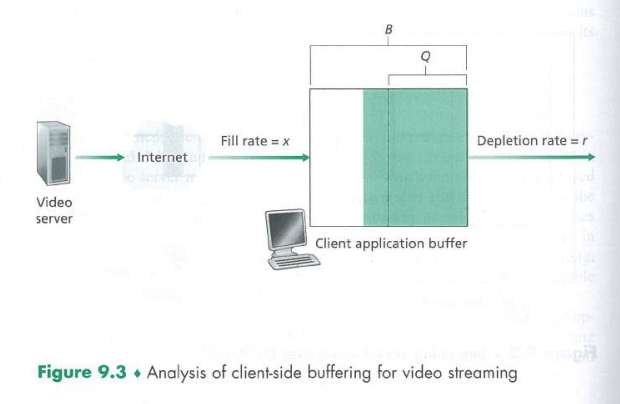

Multimedia Networking
This contents of this chapter is part of the curriculum for TTM4100, except for the section 9.4.2.
Multimedia Networking Applications
Properties of Video
Video compression. Spatial redundancy is the redundancy within a given image. Temporal redundancy reflects repetition from image to subsequent image.
Properties of Audio
Types of Multimedia Network Applications
We classify multimedia applications into three breoad categories: (i) streaming stored audio/video, (ii) conversational voice/video-over-IP, (iii) streaming live audio/video.
Streaming Stored Audio and Video
Streaming stored video has three key distinguishing features:
- Streaming. Avoids having to download the entire video file before playout begins.
- Interactivity. The user may pause, and reposition through the video content.
- Continous playout. Once playout begins, it should proceed according to the original timing of the recording.
By far, the most important performance measure for streaming video is average throughput.
Conversational Voice- and Video-over-IP
Real-time conversational voice over the Internet is often referred t as Voice-over-IP (VoIP).
Audio and video conversational applications are highly delay-sensitive. However, they are loss-tolerant.
Streaming Live Audio and Video
Because the event is live, delay can be an issue, although the timing constraints are much less stringent than those for conversational voice.
Streaming Stored Video
Streaming video systems can be classified into three categores: UDP streaming, HTTP streaming and adaptive HTTP streaming.
Common characteristic: extensive use of client-side application buffering to mitigate the effects of varying end-to-end delay.

UDP Streaming
Because UDP does not employ a congestion-control mechanism, the server can push packets into the network at the consumption rate of the video without the rate-control restrictions of TCP.
However, due to varying amount of bandwidth, constant-rate UDP streaming can fail to provide continous playout. It also requires a media control server, such as an RTSP server to process interactivity requests and to track client state.
Many firewalls are configured to block UDP traffic.
HTTP Streaming
The client establishes a TCP connection and issues an HTTP GET request for the video url.
Buffering and prefetching mitagate the delays of TCP's congestion control mechanisms.
Prefetching Video
The client can attempt to download the video at a rate higher than the consumption rate, thereby prefetching video frames.
Client Application Buffer and TCP Buffers

When the user pauses the video, bits are not removed from the client application buffer, event though bits continue to enter the buffer from the server - and may become full. This causes the TCP buffers to become full, forcing the server to reduce its rate. A full client application buffer indireclty imposes a limit on the rate that video can be sent from server to client when streaming over HTTP.
Analysis of Video Streaming

The initial buffering delay .
When the available rate in the network is less than the video rate, playout will alternate between periods of continous playout and periods of freezing.
Early Termination and Repositioning the Video
The HTTP byte-range header in the HTTP GET request message specifies the range of bytes the client currently wants to retrieve from the desired video. This is useful for user repositioning.
There is significant wasted bandwidth in the Internet due to early termination, which can be quite costly.
Voice-over-IP
Real-time conversational voice over the Internet is commonly called Voice-over-IP.
Limitations of the Best-Effort IP Service
The receiver must take more care in determining (1) when to play back a chuck, and (2) what to do with a missing chunk.
Packet Loss
Loss could be eliminated by sending the packets over TCP (which provides for reliable data transfer) rather than over UDP. However, retransmission mechanisms are often considered unacceptable for conversational real-time audio applications.
Most existing VoIP applications run over UDP by default. Packet loss rates between 1 and 20 percent can be tolerated, depending on how voice is encoded and transmitted, and on how the loss is concealed at the receiver.
Forward error correction (FEC) can help conceal packet loss. With FEC, redundant information is transmitted along with the original information so that some of the lost original data can be recovered from the redundant information.
End-to-End Delay
End-to-End delay is the accumalation of transmission, processing and queuing delay in routers, propagation delay in links, and end-system processing delays.
Packet Jitter
Because of varying queuing delays, the time from when a packet is generated at the sourcce until it is received at the receiver can fluctuate from packet to packet. This is called jitter.
Jitter can often be removed by using sequence numbers, timestamps, and a playout delay.
Removing Jitter at the Receiver for Audio
The receiver should attempt to provide periodic playout of voice chunks in the presence of random network jitter. This is typically done by combining the following two mechanisms:
- Prepending each chunk with a timestamp.
- Delaying playout of chunks at the receiver. (Buffering)
Fixed Playout Delay

Adaptive Playout Delay
Uses a smoothed average of the observed network delays. The estimate places more weight on the recently observed delays.
Recovering from Packet Loss
Retransmitting lost packets may not be feasible in a real-time conversational application such as VoIP.
VoIP applications often use some type of loss anticipation scheme. Two types are FEC and interleaving.
Forward Error Correction (FEC)
For the cost of marginally increasing the transmission rate, the redundant information can be used to reconstruct approximations or exact versions of some of the lost packets.

Interleaving
Interleaving can significantly improve the perceived quality of an audio stream, but it does increase latency.

Error Concealment
Perhaps the simplest form of receiver-based recovery is packet repetition. This replaces lost packets with copies of the packets that arrived immediately before the loss.
Interpolation performs somewhat better then packet repetition but is significantly more computationally intensive.
Case Study: VoIP with Skype
Each user sends its audio stream to the conference initiator. The initiator combines the audio streams into one stream (basically by adding all the audio signals together) and then sends a copy of each combined stream to each of the other N - 1 participants.
VoIP systems such as Skype, WeChat, and Google Talk introduce new privacy concerns.
Protocols for Real-Time Conversational Applications
RTP
It is convenient to have a standardized packet structure that includes field for audio/video data, sequence number, and timestamp. RTP can be used for transporting common formats such as PCM, ACC and MP3 for sound and MPEG and H.263 for video. It can also be used for transporting proprietary sound and video formats.
RTP Basics
RTP typically runs on top of UDP. RTP does not provide any quality-of-service (QoS) guarantees.
RTP multicast streams belonging together, such as audio and video streams emanating from multiple senders in a video conference application, belong to an RTP session.

SSRC identifies the source of the RTP stream.